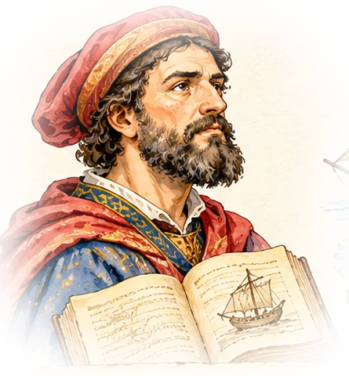

Capítol 3
Marco Polo i el que Europa sabia
Què en sabien, els europeus, de l’origen de les espècies?

En 30 segons
- Durant segles, els europeus compraven espècies sense saber d’on venien. Només en veien l’últim tram, als ports d’Alexandria o de Beirut.
- Per omplir aquest buit circulaven llegendes: boscos de pebre guardats per serps o espècies que baixaven pel Nil des del paradís.
- El mercader venecià Marco Polo (1254-1324) va viure disset anys a la Xina i va tornar per mar (1292-1295) passant pels ports de les espècies.
- El seu llibre va mostrar que el pebre era una planta conreada, que l’Índic estava ple de vaixells i que Àsia en consumia molt més que Europa.
Els europeus no sabien d’on venien les espècies. Es creien històries inventades.
Marco Polo era un mercader de Venècia. Va viatjar fins a la Xina i va tornar per mar.
Va escriure un llibre. Explicava on creixien les espècies i com es comerciava.
Qui era Marco Polo?
- 1271 — Amb disset anys, surt de Venècia amb el seu pare i el seu oncle, també mercaders, cap a la cort del gran khan mongol Kublai.
- 1275-1291 — Viu a la Xina i viatja per encàrrec del khan. Coneix ciutats, ports i mercats que cap europeu havia descrit.
- 1292-1295 — Torna per mar: Xina, Sumatra, Sri Lanka, l’Índia i Ormuz. És el camí de les espècies.
- 1298 — Presoner a Gènova, dicta els seus records a Rustichello de Pisa. Neix El llibre de les meravelles (o Il Milione).
- Segle XV — El llibre es copia i s’imprimeix. Cristòfor Colom en tenia un exemplar ple d’anotacions de la seva mà.
El viatge de tornada pel mar de les espècies
Avança parada a parada i llegeix què hi va veure Marco Polo.
Recorregut aproximat. Contorns: Natural Earth.
La font parla
Fragments del llibre de Marco Polo, traduïts al català a partir de l’edició anglesa de Yule i Cordier.
El pebre creix en gran abundància per tot aquest país. Els pebrers no són salvatges, sinó conreats: es planten i es reguen regularment, i el pebre es cull els mesos de maig, juny i juliol.
Els seus vaixells són molt dolents i perillosos, perquè no s’uneixen amb claus de ferro sinó que es cusen amb cordes fetes de la fibra de la closca del coco.
Pensa-hi
Per què és important que Polo digui que els pebrers es conreen? Pensa en les llegendes de la secció següent: què desmunta aquesta frase?
Veritat o llegenda?
Classifica cada afirmació. Algunes les van escriure savis medievals; d’altres, Marco Polo.
La gran sorpresa
Polo va explicar que al port xinès de Zayton (avui Quanzhou) hi arribava cent vegades més pebre que el que anava a Alexandria cap a Europa. Europa no era el centre del comerç de les espècies: n’era només un client petit i llunyà.